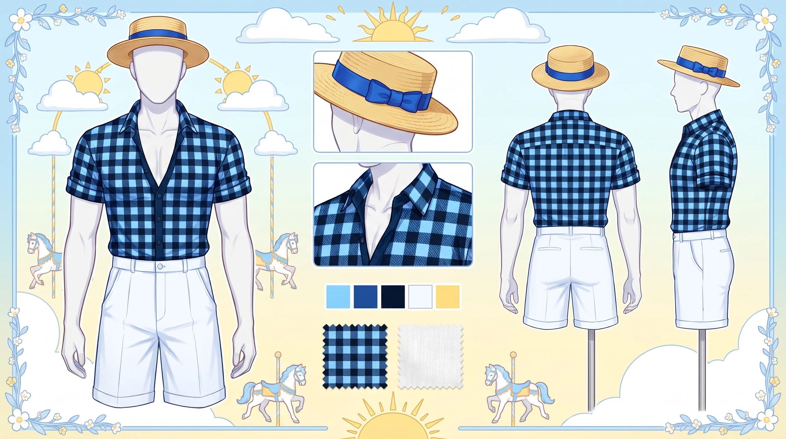
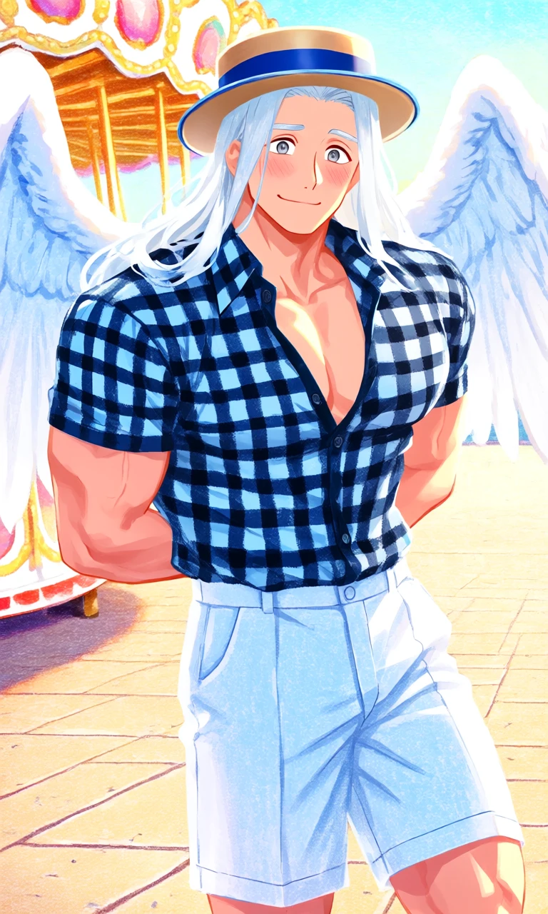

Carousel Blue

Outfit Prompt
He is wearing a boater hat with blue trim. He is wearing a gingham blue/black button up top with short sleeves, the top slightly unbuttoned to show his chest. He is wearing knee high white shorts.
Outfit Examples

